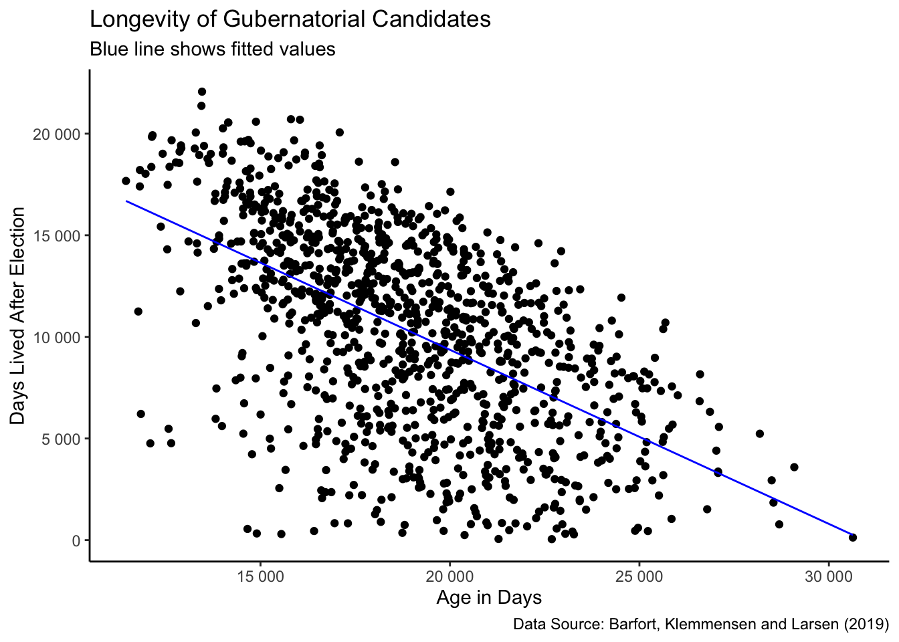
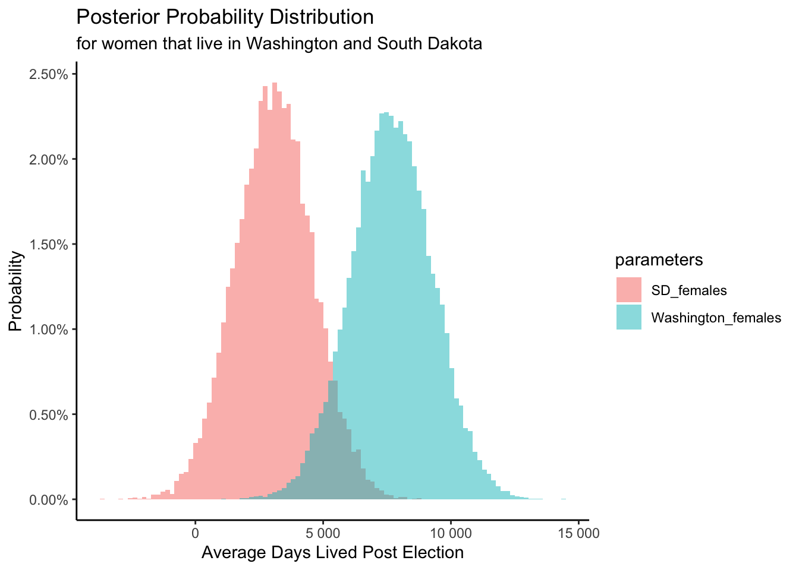

Chapter 9 N Parameters
This chapter is a draft. Come back in a few weeks for a better version.
Having created models with one parameter in Chapter 6, two parameters in Chapter 7 and three parameters in Chapter 8, you are now ready to make the jump to \(N\) parameters.
In this chapter, we will consider models with multiple parameters and the complexities that arise therefrom.
9.1 EDA of governors
Load packages:
We will start off by using a subset of the governors data set from the PPBDS.data package. This data set looks at the lifespans of candidates for governor in the US. It comes from the paper “Longevity Returns to Political Office” by Barfort, Klemmensen and Larsen (2019), which concludes that winning a gubernatorial election increases a candidate’s lifespan.
## Rows: 1,092
## Columns: 11
## $ state <chr> "Alabama", "Alabama", "Alabama", "Alabama", "Alabama", "Al…
## $ year <int> 1946, 1946, 1950, 1954, 1954, 1958, 1962, 1966, 1966, 1970…
## $ first_name <chr> "James", "Lyman", "Gordon", "Tom", "James", "William", "Ge…
## $ last_name <chr> "Folsom", "Ward", "Persons", "Abernethy", "Folsom", "Longs…
## $ party <chr> "Democrat", "Republican", "Democrat", "Republican", "Democ…
## $ sex <chr> "Male", "Male", "Male", "Male", "Male", "Male", "Male", "M…
## $ died <date> 1987-11-21, 1948-12-17, 1965-05-29, 1968-03-07, 1987-11-2…
## $ status <chr> "Challenger", "Challenger", "Challenger", "Challenger", "C…
## $ win_margin <dbl> 77.3, -77.3, 82.2, -46.7, 46.7, -77.5, 100.0, -34.3, 34.3,…
## $ alive_post <int> 14991, 773, 5319, 4871, 12069, 19924, 13096, 18622, 549, 1…
## $ alive_pre <int> 13906, 28690, 17805, 17001, 16828, 12152, 15778, 17597, 14…There are 11 variables and 1092 observations. In this Chapter, we will only be looking at the variables last_name, year, state, sex, alive_post, and alive_pre.
There are a few things to note when looking at this data. First, the data set includes the variables alive_pre and alive_post, which tell us how many days a candidate lived before the election took place and how many days a candidate lived after the election, respectively. As a consequence, only politicians who are already deceased are included in this data set. This means that there are only a handful of observations from elections in the last 20 years. Most candidates from that time period are still alive and are, therefore, excluded.
Another caveat is that for a given election, only the top two candidates are included in the data. If a politician did not receive the highest or second-highest number of votes, they are excluded.
Finally, for some observations, only the birth or death year of a candidate could be determined and not the exact date. In those cases, the date was set as July 1st of that year.
## # A tibble: 10 x 6
## last_name year state sex alive_post alive_pre
## <chr> <int> <chr> <chr> <int> <int>
## 1 Meyner 1969 New Jersey Male 7508 22405
## 2 Beall 1978 Maryland Male 10001 18767
## 3 Forbes 1957 New Jersey Male 11799 13958
## 4 Blaylock 1972 Arkansas Male 14385 19691
## 5 Ostlund 1978 Wyoming Male 9305 18665
## 6 Pastore 1948 Rhode Island Male 18880 15209
## 7 Conrad 1976 Indiana Male 4992 15246
## 8 Rice 1946 Pennsylvania Male 14150 17447
## 9 Arn 1950 Kansas Male 17245 16241
## 10 Powell 1958 New Hampshire Male 8098 15729sex is most often “Male”, as we might expect.
TABLE 9.1: Data summary
| Name | ch9_gov |
| Number of rows | 1092 |
| Number of columns | 6 |
| _______________________ | |
| Column type frequency: | |
| character | 3 |
| numeric | 3 |
| ________________________ | |
| Group variables | None |
Variable type: character
| skim_variable | n_missing | complete_rate | min | max | empty | n_unique | whitespace |
|---|---|---|---|---|---|---|---|
| last_name | 0 | 1 | 3 | 11 | 0 | 615 | 0 |
| state | 0 | 1 | 4 | 14 | 0 | 50 | 0 |
| sex | 0 | 1 | 4 | 6 | 0 | 2 | 0 |
Variable type: numeric
| skim_variable | n_missing | complete_rate | mean | sd | p0 | p25 | p50 | p75 | p100 | hist |
|---|---|---|---|---|---|---|---|---|---|---|
| year | 0 | 1 | 1965 | 13 | 1945 | 1954 | 1962 | 1974 | 2011 | ▇▆▃▂▁ |
| alive_post | 0 | 1 | 10310 | 4886 | 46 | 6419 | 10811 | 14124 | 22067 | ▃▆▇▆▂ |
| alive_pre | 0 | 1 | 18892 | 3181 | 11450 | 16561 | 18758 | 20996 | 30633 | ▂▇▆▂▁ |
This output groups the variables together by type (character, logical, numeric, etc.). We are given histograms of the numerical data. In looking at the histogram for year, we see that it is skewed right, with half of the observations from election years between 1945 and 1962. This makes sense logically, because we are only looking at deceased candidates, and candidates from more recent elections are more likely to still be alive.
In using this data set, our left-side variable will be alive_post. We are trying to understand/predict how many days a candidate will live after the election. Let’s look at some graphs and plots showing the relationships between alive_post and some of the other variables in our subset.

Starting with the relationship between alive_post and year, we can see that the data is skewed right and that there is a rough line above which there are no observations. There are no data points in the top right portion of the graph because it is not possible to have run in 2011, lived 20,000 days after the election took place, and still have died before the data set was created. This line represents, approximately, the most a candidate could have possibly lived — and still have died — to be included the data set. The reason this line is slanted downward is because the maximum value for this scenario is greater in earlier years. That is, those candidates who ran for governor in earlier years could live a long time after the election and still have died prior to the data set creation, giving them higher alive_post values than those who ran for office in more recent years.
There are fewer observations in later years because fewer recent candidates have died.
ch9_gov %>%
ggplot(aes(x = sex, y = alive_post)) +
geom_boxplot() +
labs(title = "US Gubernatorial Candidate Lifespans",
subtitle = "Male candidates live much longer after the election",
caption = "Data: Barfort, Klemmensen and Larsen (2019)",
x = "Gender",
y = "Days Lived After Election") +
scale_y_continuous(labels = scales::label_number()) This plot shows that men live much longer, on average, than women after the election. Does that make sense to you?
9.2 Wisdom
 FIGURE 9.1: Wisdom
FIGURE 9.1: Wisdom
As frustrating as it might be, the relationship between the data you use and the question you wish to answer is never going to be as perfect as we hope. Let’s use our preceptor tables as an example. In an ideal world. our tables would have no question marks. Everything would be filled out, and calculating the numbers we are interested in would take minimal effort. However, the reality is that data is imperfect and messy. It is always necessary to ask the question, "Is the data we are using relevant to answer the question we ask?. Are the data sets we use too outdated to use in present day? Does the environment in which the population was sampled have factors that significantly influence one outcome to occur more often than the alternative? You can never ask too many questions.
However, questions should not be the only things on our mind. Ethics are equally important! Should we be making the model we seek to create? There are certain variables that we can encounter in data sets that are more dicey and controversial than others. Therefore, we must always be cautious and take a step back before we proceed.
9.3 Justice and Courage
 FIGURE 9.2: Justice
FIGURE 9.2: Justice
FIGURE 9.3: Courage
Because we will be going through a series of models in this chapter, it is useful to combine the virtues of Justice and Courage. To begin, let’s model candidate lifespan after the election as a function of candidate lifespan prior to the election. The data:

The math is fairly simple:
\[ alive\_post_i = \beta_0 + \beta_1 alive\_pre_i + \epsilon_i \]
with \(\epsilon_i \sim N(0, \sigma^2)\). \(alive\_post_i\) is the number of days lived after the election for candidate \(i\). \(alive\_pre_i\) is the number of days lived before the election for candidate \(i\). \(\epsilon_i\) is the “error term,” the difference between the days-lived of candidate \(i\) and the modeled days-lived of all candidates. \(\epsilon_i\) is normally distributed with a mean of 0 and a standard deviation of \(\sigma\). The key distinction is between:
Variables, always subscripted with \(i\), whose values (potentially) vary across individuals.
Parameters, never subscripted with \(i\), whose values are constant across individuals.
\(\beta_0\) is the “intercept” of the regression, the average value for the population of \(alive\_post\) for those for whom \(alive\_pre = 0\). \(\beta_1\) is the “coefficient” of \(alive\_pre\). Each one day increase in \(alive\_pre\) is associated with a \(\beta_1\) change in \(alive\_post\). Again, this is the value for the population from which are data is drawn.
The concept of the “population” is subtle and important. The population is not the set of candidates for which we have data. That is the data set. The population is the larger — potentially much larger — set of individuals about whom we want to make inferences. The parameters refer to the population, not to the data set.
Consider a simple example. Define \(\mu\) as the average number of days lived by candidates for governor after Election Day. Can we calculate \(\mu\) from our data? No! There are many candidates for governor who are still alive, who are not included in our data even though they are part of the “population” we want to study. \(\mu\) can not be calculated. It can only be estimated.
Note, also, that there are many different populations, each with its own \(\mu\), which we might be interested in.
The population of all candidates for governor in the US from 1945 to 2012. This is the period covered in the paper.
The population of all candidates for governor in the US from 1900 to 2012. A priori, we would not expect a major difference between candidates who run in 1946 and those who run in 1942. How different could they be? It is therefore not unreasonable to extend the population of interest back in time, even if we have zero data for earlier periods.
The population of all candidates for governor in the US from 1945 to 2030. We are often interested in the future. We want to make predictions about what will happen to candidates, even to candidates who have not yet run for office.
The population of candidates for governor around the world. Other countries have governors also! We want to understand their longevity as well.
The population of candidates for all political offices in the US. We might expect candidates for Senator to have similar lifespans to candidates for Governor.
And so on. There are as many possible populations are there are questions we might ask.
All of these populations are different, so each has a different \(\mu\). Which \(\mu\) we are interested in depends on the problem we are trying to solve. It is a judgment call, a matter of Wisdom, as to whether or not that data we have is “close enough” to the population we are interested in to justify making a model.
Coming back to our model with \(alive\_pre\), there are three unknown parameters, similar to the situation we faced in Chapter 8.
You may recall from middle school algebra that the equation of a line is \(y = a + b x\). It is defined by two coefficients \(a\) and \(b\). The intercept coefficient \(a\) is the value of \(y\) when \(x = 0\). The slope coefficient \(b\) for \(x\) is the increase in \(y\) for every increase of one in \(x\). When defining a regression line, we use slightly different notation but the fundamental relationship is the same.
We can use geom_smooth() to create the fitted regression line:

Consider someone who is about 5,000 says younger than the average candidate. We have a score or more data points for candidates around that age. Some of then only lived for about 5,000 days after the election. Others lived for more than 20,000 days. The world is filled with variation. But the fitted line tells us that, on average, we would expect a candidate that age to live for about 15,000 days after the election.
This model, with a continuous independent (or “predictor”) variable has an infinite number of fitted values, one for each possible value of alive_pre. This is very different from the models we saw in Chapter 8. Those models only had two possible fitted values because the predictor variable only took two possible values.
We can implement this model with stan_glm().
As we discussed in Chapter 8, the most common term for a model like this is a “regression.” We have “regressed” alive_post, our dependent variable on alive_pre, our one independent variable.
The parameter values:
## Median MAD_SD
## (Intercept) 26532.8 715.2
## alive_pre -0.9 0.0
##
## Auxiliary parameter(s):
## Median MAD_SD
## sigma 4053.7 87.0As is almost always the case, \(\sigma\) is a nuisance parameter, somethings whose value we are not interested in. This is why stan_glm() refers to it as an “Auxiliary” parameter.
The posterior distributions of \(\beta_0\) (the intercept) and \(\beta_1\) (the coefficient of alive_pre), on the other hand, are important. Before looking at the posteriors themselves, let’s examine the fitted values:
ch9_gov %>%
ggplot(aes(x = alive_pre, y = alive_post)) +
geom_point() +
geom_line(aes(y = fitted(fit_gov_1)), color = "blue") +
labs(title = "Longevity of Gubernatorial Candidates",
subtitle = "Blue line shows fitted values",
caption = "Data Source: Barfort, Klemmensen and Larsen (2019)",
x = "Age in Days",
y = "Days Lived After Election") +
scale_x_continuous(labels = scales::label_number()) +
scale_y_continuous(labels = scales::label_number()) 
This code is the same as the code we used above, except that we have replaced geom_smooth() with geom_line(). Calling fitted() on a model returns the set of fitted values, which we have plotted by hand.
We can create a formula for the fitted values by placing the median values of the parameters into the model:
\[ alive\_post_i = 26,524 - 0.9 alive\_pre_i + \epsilon_i\]
Consider the intercept. Since our independent variable is alive_pre, the intercept is the alive_post value when alive_pre is zero. Here, we would interpret this intercept as the average lifespan of a gubernatorial candidate after the election, if the candidate was alive for zero days prior to the election.
This is, of course, substantively nonsense. No one runs for office on the day they are born. In the next model, we will explore ways of making the intercept more interpretable. In the meantime, the math is the math.
Consider the coefficient for alive_pre, \(\beta_1\). The median of the posterior, -0.9, represents the slope of the model. For every unit increase in our independent variable, our dependent variable will change by this coefficient. Putting this slope definition in terms of our model, this means that for every additional day a candidate is alive before an election, their lifespan after the election will be 0.9 days lower, on average. If we are given the number of days a candidate lived before the election and want to estimate how long they will live for after, we will multiply the days they were alive prior by this beta of -0.9, then subtract that from the intercept.
This is a descriptive model, not a causal model. Remember our motto from Chapter 3: No causation without manipulation. There is no way, for person \(i\), to change the days that she has been alive on Election Day. On the day of this election, she is X days old. There is no way to change that. So, there are not two (or more) potential outcomes. Without more than one potential outcome, there can not be a causal effect.
Given that, it is important to monitor our language. We do not believe that that changes in alive_pre “cause” changes in alive_post. That is obvious. But there are some words and phrases — like “associated with” and “change by” — which are too close to causal. (And which we are guilty of using just a few paragraphs ago!) Be wary of their use. Always think in terms of comparisons when using a predictive model. We can’t change alive_pre from X to Y for an individual candidate. We can only compare two candidates (or two groups of candidates), one with alive_pre equal to X and the other with alive_pre equal to Y. If our model is correct, such candidates will, on average, differ in alive_post by \(\beta_1\) times the difference between X and Y.
Let’s look at the posterior of \(\beta_1\), the coefficient of alive_pre:
fit_gov_1 %>%
as_tibble() %>%
ggplot(aes(alive_pre)) +
geom_histogram(aes(y = after_stat(count/sum(count))),
bins = 100, ) +
labs(title = "Posterior Distribution of the Coefficient of `alive_pre`",
y = "Probability",
x = "Coefficient of `alive_pre`")
Centering is a tool that is used when the model’s intercept does not make substantive sense. To center a model, we pick a constant value, usually the mean of the independent variable, and subtract that constant from every value of the independent variable.
In this example, we want to center the value for alive_pre, the independent variable. First, we must pick the value that we will center by. Here, we will use the mean of alive_pre. Once we find this value, we will subtract it from every alive_pre value. We have, thereby, changed the meaning of alive_pre. It now means the number of days a candidate has been alive, as of Election Day, relative to the average days alive of all candidates on their respective election days.
fit_gov_1.centered <- stan_glm(data = ch9_gov,
formula = alive_post ~ alive_pre,
refresh = 0)
print(fit_gov_1.centered, detail = FALSE)## Median MAD_SD
## (Intercept) 10310.4 120.0
## alive_pre -0.9 0.0
##
## Auxiliary parameter(s):
## Median MAD_SD
## sigma 4054.9 89.0In this model, we can see that the intercept has increased while the slope has stayed the same. When we interpret this model, we only have to change the definition of the intercept. Rather than the intercept representing the lifespan of a candidate who was alive for zero days before running for governor, it now represents the post-election lifespan of a gubernatorial candidate who was alive for the mean number of days before running. In this instance, our center value is approximately 18,892, so we will use this value in our interpretation. If a candidate was alive for 18,892 days before running for governor (the mean value in this data set), they are expected to live about 10,300 days after the election, on average.
Always think in terms of unknown parameters. What do they mean? Which population do they represent? What ideal Preceptor Table would make their calculation easy? In this case, \(\beta_0\) could be interpreted as the average number of days which gubernatorial candidates live after election day. If we had the ideal Preceptor Table, this would be trivial to calculate. Just take the average! No estimation required. But, our actual Preceptor Table has lots of missing values. In particular, many gubernatorial candidates have not . . . uh . . . died. (How inconsiderate!) So, we can’t know how many days they will live. All we can do is estimate a posterior probability distribution for \(\beta_0\).
Let’s now regress sex on alive_post to see how candidates’ post-election lifespans differ by sex.
Note that this workflow. Try one model. Interpret it. Try another model. And then another. There is no one “true” model. There is an infinite space of possible models. Good data science involves an intelligent tour of that space.
## Median MAD_SD
## sexFemale 5838.0 1011.9
## sexMale 10398.5 141.7
##
## Auxiliary parameter(s):
## Median MAD_SD
## sigma 4849.6 101.2In this regression, we use the -1 in the formula to make the output more straightforward, with no intercept to interpret. The math of this model is the same as those we saw in Chapter 8:
\[ \underbrace{y_i}_{outcome} = \underbrace{\beta_1 x_{f,i} + \beta_2 x_{m,i}}_{model} + \underbrace{\epsilon_i}_{not\ in\ the\ model}\]
where \[x_{f,i}, x_{m,i} \in \{0,1\}\] \[x_{f,i} + x_{m,i} = 1\] \[\epsilon_i \sim N(0, \sigma^2)\]
The meanings of \(y_i\) and \(\epsilon_i\) are the same as in the first models. Indeed, they are the same throughout these exercises. \(x_{f,i}\) and \(x_{m,i}\) are 0/1 variables, just like last chapter. They are variables whose value varies across individuals.
The important parameters are \(\beta_1\) and \(\beta_2\). They are the average days-lived post-election for, respectively, women and men. Again, this is not the “average” for the data we have. That is easy to calculate! No estimation required. \(\beta_1\) and \(\beta_2\) are averages for the entire “population,” however we have chosen to define that term. Those averages can not be calculated directly. They can only be estimated, by creating a posterior probability distribution.
Looking back to the regression model we just created, we see that there is no intercept. Instead of having a \(b_0\) value, we have \(b_1\) and \(b_2\) for female and male. This makes things easier to interpret. Without having to add or subtract anything from an intercept, this regression tells us that on average, women are expected to live about 6,000 days after running for governor, and men are expected to live 10,000 days.
This is a strange result. Why would men live twice as long as women after the election? One explanation for this might be that women don’t run for governor until later in life, and therefore are not expected to live as long.
Now that we have interpreted the model using a -1 in the formula to get both a \(b_1\) value and a \(b_2\) value, let’s take away the -1 and regress alive_post on and intercept and on sex to see how our equation changes.
## Median MAD_SD
## (Intercept) 5836.7 1062.6
## sexMale 4558.1 1076.7
##
## Auxiliary parameter(s):
## Median MAD_SD
## sigma 4852.1 109.0From this result, we can see that we no longer have a value for female. However we do have an intercept. In this regression our mathematical regression formula is:
\[ y_i = \beta_0 + \beta_1 x_{m,i} + \epsilon_i\]
\(b_0\) is our intercept value which here would be around 5,850. You may notice that this is very similar to the female value from before. In this type of model, our intercept represents the characteristic of the variable that is left unrepresented in the model. Here our slope, or \(b_1\) value, only shows up when the candidate is male. (If the candidate is female, then \(x_{m,i} = 0\). Therefore, the intercept value represents those who are not male: females.
When the candidate is a male, we add the coefficient for male to the intercept value, which gives us the average lifespan of a male gubernatorial candidate after an election. As we can see from adding \(b_0\) and \(b_1\), this value is the same as what we got for males in the previous model.
Be careful with notation! \(\beta_1\) in the no-intercept model is different from \(\beta_1\) in the model with an intercept! Notation varies. We must pay attention each time we make a model.
The posterior distribution for \(\beta_0 + \beta_1\) can be constructed via simple addition.
fit_gov_2a %>%
as_tibble() %>%
mutate(male_intercept = `(Intercept)` + sexMale) %>%
ggplot(aes(male_intercept)) +
geom_histogram(aes(y = after_stat(count/sum(count))),
bins = 100, ) +
labs(title = "Posterior Distribution of Average Male Candidate Days Left`",
y = "Probability",
x = "Male Days To Live After the Election")
The interpretation of this model is the same as we have seen before. There is a true average, across the entire population, of the number of days that male candidates live after the election. We can never know what that true average is. But, it seems highly likely that the true average is somewhere between 10,000 and 10,750 days.
9.4 Multiple Variable Regression
We are going to transition to working with a model that has more than one explanatory variable, x. Our outcome variable will be alive_post, but now we will have two different explanatory variables: alive_pre and sex. Note that sex is a continuous explanatory variable and alive_pre is numerical explanatory variable.
Here is the math we will be using:
\[ y_i = \beta_0 + \beta_1 male_i + \beta_2 alive\_pre_i+ \epsilon_i \] Great! Now that we have our model, let’s break it down to explain what each part means.
$ y_i$ is our outcome variable. In our case, the outcome variable is alive_post, the number of days a person is alive after the election. \(male_i\) is one of our explanatory variables. If we are predicting the amount of days a male candidate lives after the election, this value will be 1. When we are making this prediction for female candidate, this value will be 0. \(alive_pre\) is our other explanatory variable that represents the number of days a candidate has lived before the election.
\(\beta_0\) is the avg. number of days lived after the election for women, who on the day of election, have been alive the avg. number of days of all candidates (i.e. both male and female). \(\beta_0\) is also the intercept of the equation. In other words, \(\beta_0\) is the expected value of $ y_i$ if \(male_i\) = 0 and \(alive_pre\) = 0. However, we can ignore that for our purpose because no one running for governor would have been alive 0 days before the election!
\(\beta_1\) is insignificant by itself. The only time it has meaning is when its value is connected to our intercept (i.e. \(\beta_0\) + \(\beta_1\)). When the two are added together, you get the avg. number of days lived after the election for men, who on the day of election, have been alive the avg. number of days of all candidates.
\(\beta_2\) is, for the entire population, the avg. difference in \(y_i\) between two individuals, one of whom has an alive_pre value of 1 greater than the other. Why is this important? Well, it just serves as a comparison for two otherwise identical people.
Now that we understand our model, let’s translate the following model into code.
## Median MAD_SD
## (Intercept) 8103.0 896.4
## sexMale 2252.4 888.7
## alive_pre -0.8 0.0
##
## Auxiliary parameter(s):
## Median MAD_SD
## sigma 4046.8 84.0Looking above at our results, you can see that our intercept value is 8069. What does this mean? Well, applying this to our discussion above, its significance would be that the average female candidate would be alive 8069 days lived after the election, who on the day of election, have been alive the avg. number of days of all candidates. Now take a look at the value 2281 next to sexMale. We need to connect this value to our intercept value to get something meaningful. Using our formula \(\beta_0\) + \(\beta_1\), we find out how many days the average male candidate would be alive after the election, who on the day of election, have been alive the avg. number of days of all candidates. Our answer would be 10305.
Now take a look at the coefficient for alive_pre, \(\beta_2\). The median of the posterior, -0.8, represents the slope of the model. For every unit increase in our independent variable, our dependent variable will change by this coefficient. It makes sense that this value is negative. Think about it…the more days a candidate has has lived, the fewer days the candidate has left to live. So, for every extra day a candidate is alive before an election, their lifespan after the election will be 0.8 days lower, on average.
If we applied this knowledge to the model, we would get the following:
\[ y_i = 8052.5 + 2309male_i + -.8 alive\_pre_i+ \epsilon_i \]
Let’s look at some posteriors.
fit_gov_3 %>%
as_tibble() %>%
mutate(male_days = `(Intercept)` + sexMale) %>%
rename(female_days = `(Intercept)`) %>%
select(female_days, male_days) %>%
pivot_longer(cols = female_days:male_days,
names_to = "parameters",
values_to = "days") %>%
ggplot(aes(days, color = parameters)) +
geom_density() +
labs(title = "Posterior Probability Distribution",
subtitle = "Men live longer",
x = "Average Days Lived Post Election",
y = "Probability") +
theme_classic() +
scale_y_continuous(labels=scales::percent_format())From this posterior, what can we interpret? Well, let’s take a look at both curves. You can clearly see that the distribution is spread out more than males. What does this mean? It means men have more precise values for alive_post because there were a greater amount of men than women in this data.
Let’s now take a look at a posterior distribution for \(\beta_2\), the coefficient of alive_pre.
fit_gov_3 %>%
as_tibble() %>%
ggplot(aes(alive_pre)) +
geom_histogram(aes(y = after_stat(count/sum(count))),
bins = 100, ) +
labs(title = "Posterior Distribution of the Coefficient of `alive_pre`",
y = "Probability",
x = "Coefficient of `alive_pre`")
Let’s now model the numerical outcome variable of alive_post as a function of the two explanatory variables we used above: alive_pre and sex.
Here is the math we will be using:
\[ y_i = \beta_0 + \beta_1 male_i + \beta_2 alive\_pre_i+ \beta_3 male_i * alive\_pre_i + \epsilon_i\]
Ok, great! Now that we have our model, let’s break it down to explain what each part means. Note that a few of our meanings will be the same as our previous model above.
\(y_i\), our outcome variable, is still alive_post. We want to know how many days a candidate will live after an election.
\(male_i\) is still one of our explanatory variables. If we are predicting the amount of days a male candidate lives after the election, this value will be 1. When we are making this prediction for female candidate, this value will be 0. \(alive_pre\) is still our other explanatory variable that represents the number of days a candidate has lived before the election.
\(\beta_0\) is the avg. number of days lived after the election for women, who on the day of election, have been alive the avg. number of days of all female candidates. Note that this is different than our previous example where it was the avg. of all candidates. \(\beta_0\) is also the intercept of the equation.
\(\beta_2\) is the coefficient of alive_pre. It it just the slope for women. Note: in our last example, \(\beta_2\) wqs the slope for the whole population. Now we are getting more specific.
\(\beta_3\) is insignificant. However, it gains meaning when it is added to \(\beta_2\), which results in the slope for men.
## Median MAD_SD
## (Intercept) 5992.1 1335.4
## sexMale 4372.0 1344.0
## alive_pre -0.1 0.4
## sexMale:alive_pre -0.8 0.4
##
## Auxiliary parameter(s):
## Median MAD_SD
## sigma 4040.2 85.1Unlike our last model, we now have two intercepts to consider:
(Intercept) or \(\beta_0\) is 6008.4. This is the intercept for females. It still means he avg. number of days lived after the election for women is 6008.4,
sexMale refers to the value that must be added to (Intercept) in order to get the intercept for males. When calculated, i.e. 4332.1 + 6008.4, the result is 10340.5.
The coefficient for alive_pre is -.1. What does this mean? It is the slope for only females. So for every extra day a feamle candidate is alive before an election, their lifespan after the election will be 0.1 days lower, on average. Now take a look below at the coefficient of sexMale:alive_pre, which is -.8. This is the value that must be added to the coefficient of alive_pre (recall \(\beta_2\) + \(\beta_3\)) in order to find the slope for males. When the two are added together, the value, or slope, is -.9. This means for every extra day a male candidate is alive before an election, their lifespan after the election will be 0.9 days lower, on average.
Now let’s take a look at some posterior graphics:
fit_gov_4 %>%
as_tibble() %>%
mutate(male_days = `(Intercept)` + sexMale) %>%
rename(female_days = `(Intercept)`) %>%
select(female_days, male_days) %>%
pivot_longer(cols = female_days:male_days,
names_to = "parameters",
values_to = "days") %>%
ggplot(aes(days, color = parameters)) +
geom_density() +
labs(title = "Posterior Probability Distribution",
subtitle = "Men live longer",
x = "Average Days Lived Post Election",
y = "Probability") +
theme_classic() +
scale_y_continuous(labels=scales::percent_format())
From this posterior distribution we are able to see that male candidates live longer on avg. than female candidates.
fit_gov_4 %>%
as_tibble() %>%
mutate(slope_men = alive_pre + `sexMale:alive_pre`) %>%
rename(slope_women = alive_pre) %>%
select(slope_women, slope_men) %>%
pivot_longer(cols = slope_men:slope_women,
names_to = "parameters",
values_to = "slope") %>%
ggplot(aes(slope, color = parameters)) +
geom_density() +
labs(title = "Posterior Probability Distribution",
subtitle = "Men have a steeper slope",
x = "slope",
y = "Probability") +
theme_classic() +
scale_y_continuous(labels=scales::percent_format())
Talk about avg. differnece for women then men, slope for men is steeper etc.
For our last model, it will be very similar to the one we just created. However, we are now adding “state”, which will give us 55 different intercepts! Wow.
Here’s the math we will be using:
\[ y_i = \beta_0 + \beta_1 x_{AK,i} + \beta_1 x_{AR,i} + ... \beta_{49} x_{WY,i} + \beta_{50} male_i + \beta_{51} alive\_pre_i+ \beta_{52} male_i * alive\_pre_i + \epsilon_i\]
This looks extremely overwhelming and terrifying. However, becomes quickly simplified once we understand what we are looking for.
fit_gov_5 <- stan_glm(data = ch9_gov,
formula = alive_post ~ state + sex*alive_pre,
refresh = 0,
iter = 10000)Note it takes awhile to run. We are dealing with 55 parameters here. What does that mean exactly? Well, it means there is a specific intercept for each state!
## Median MAD_SD
## (Intercept) 4855.9 1511.5
## stateAlaska 1134.9 1399.6
## stateArizona 2947.5 1112.5
## stateArkansas 570.0 1148.2
## stateCalifornia 2045.8 1216.3
## stateColorado 1515.9 1190.0
## stateConnecticut 1068.3 1206.0
## stateDelaware 3166.9 1273.2
## stateFlorida -1514.8 1338.3
## stateGeorgia 1825.4 1406.4
## stateHawaii 1624.9 1524.8
## stateIdaho 1754.0 1212.0
## stateIllinois -127.9 1310.2
## stateIndiana 1297.2 1226.8
## stateIowa 975.3 1141.4
## stateKansas -110.9 1157.5
## stateKentucky 1514.2 1266.2
## stateLouisiana 1467.7 1452.9
## stateMaine 2165.1 1290.6
## stateMaryland 1698.3 1210.0
## stateMassachusetts 138.8 1146.2
## stateMichigan -1111.2 1174.1
## stateMinnesota 1682.4 1134.5
## stateMississippi 826.2 1290.9
## stateMissouri 528.3 1291.9
## stateMontana 891.0 1256.6
## stateNebraska 848.1 1175.4
## stateNevada 1559.3 1330.0
## stateNew Hampshire 1343.3 1126.2
## stateNew Jersey 413.9 1268.8
## stateNew Mexico 1061.9 1108.2
## stateNew York 914.8 1189.1
## stateNorth Carolina -1407.0 1400.1
## stateNorth Dakota 2197.6 1172.5
## stateOhio 2234.3 1175.5
## stateOklahoma -522.8 1318.2
## stateOregon 248.5 1240.9
## statePennsylvania 1304.7 1257.6
## stateRhode Island 1985.7 1069.4
## stateSouth Carolina 2503.8 1341.5
## stateSouth Dakota -1807.4 1106.6
## stateTennessee -408.0 1255.7
## stateTexas 1226.2 1123.2
## stateUtah 1239.4 1225.4
## stateVermont 588.7 1140.1
## stateVirginia 2611.0 1398.3
## stateWashington 2791.2 1271.1
## stateWest Virginia 2425.3 1257.1
## stateWisconsin 2487.2 1115.5
## stateWyoming -501.7 1229.3
## sexMale 4420.2 1328.4
## alive_pre -0.1 0.4
## sexMale:alive_pre -0.8 0.4
##
## Auxiliary parameter(s):
## Median MAD_SD
## sigma 3959.6 86.2Glance at the top of the list for states under the “A” section. Can you tell which state is missing? If you guessed Alabama, you are right! The (Intercept) refers to the avg. number of days lived after the election for women, who on the day of election, have been alive the avg. number of days of all female candidates in Alabama! That’s a mouthful. It really is not different than what we have been doing all along, however.
To find the avg. number of days lived after the election for women who on the day of election, have been alive the avg. number of days of all female candidates in a certain state, you just add the (Intercept) value, 4910.4 to whatever median value is next to that certain state.
However, we have only talked about women. What about for the men? Well, if you look at the bottom of the list, you will see the sexMale value 4410.1. When you wish to find alive_post for a specific state, you must add this value to the (Intercept), 4910.4, and then add the intercept of the desired state.
Let’s look at the posterior distribution for women in Washington and South Dakota.
fit_gov_5 %>%
as_tibble() %>%
mutate(Washington_females = `(Intercept)` + 2739.1) %>%
mutate (SD_females = `(Intercept)`-1869.4) %>%
select(Washington_females, SD_females) %>%
pivot_longer(cols = Washington_females:SD_females,
names_to = "parameters",
values_to = "days") %>%
ggplot(aes(days, color = parameters)) +
geom_density() +
labs(title = "Posterior Probability Distribution",
subtitle = "for women that live in Washington and South Dakota",
x = "Average Days Lived Post Election",
y = "Probability") +
theme_classic() +
scale_y_continuous(labels=scales::percent_format())
9.5 Temperance
 FIGURE 9.4: Temperance
FIGURE 9.4: Temperance
9.6 EDA of shaming
Imagine you are running for Governor and want to do a better job of getting your voters to vote. You recently read about a large-scale experiment showing the effect of sending out a voting reminder that “shames” citizens who do not vote. You are considering sending out a “shaming” voting reminder yourself. What will happen if you do? Will more voters show up to the polls? Additionally, on the day of the election a female citizen is randomly selected. What is the probability she will vote?
Consider a new data set, shaming, corresponding to an experiment carried out by Gerber, Green, and Larimer (2008) titled “Social Pressure and Voter Turnout: Evidence from a Large-Scale Field Experiment”. This experiment used several hundred thousand registered voters and a series of mailings to determine the effect of social pressure on voter turnout.
Let’s now do another EDA, starting off by running glimpse().
## Rows: 344,084
## Columns: 10
## $ sex <chr> "Male", "Female", "Male", "Female", "Female", "Male", "Fe…
## $ birth_year <int> 1941, 1947, 1951, 1950, 1982, 1981, 1959, 1956, 1968, 196…
## $ primary_02 <chr> "Yes", "Yes", "Yes", "Yes", "Yes", "No", "Yes", "Yes", "Y…
## $ general_02 <chr> "Yes", "Yes", "Yes", "Yes", "Yes", "No", "Yes", "Yes", "N…
## $ primary_04 <chr> "No", "No", "No", "No", "No", "No", "No", "No", "No", "No…
## $ general_04 <chr> "Yes", "Yes", "Yes", "Yes", "Yes", "Yes", "Yes", "Yes", "…
## $ treatment <fct> Civic Duty, Civic Duty, Hawthorne, Hawthorne, Hawthorne, …
## $ primary_06 <int> 0, 0, 1, 1, 1, 0, 1, 1, 0, 0, 1, 0, 1, 0, 1, 1, 0, 0, 1, …
## $ hh_size <int> 2, 2, 3, 3, 3, 3, 3, 3, 2, 2, 1, 2, 2, 1, 2, 2, 2, 2, 1, …
## $ no_of_names <int> NA, NA, NA, NA, NA, NA, NA, NA, NA, NA, NA, NA, NA, NA, N…Here we see that glimpse() gives us a look at the raw data contained within the shaming data set. At the very top of the output, we can see the number of rows and columns, or observations and variables respectively. We see that there are 344,084 observations, with each row corresponding to a unique respondent. The “Columns: 10” tells us that there are 10 variables within this data set. Below this, we see a cutoff version of the entire data set that has the variables on the left as rows and the observations as a list separated by commas, as compared to the tibble output that presents with the variables as columns and the observations as rows running horizontally.
From this summary, we get an idea of some of the variables we will be working with. Variables of particular interest to us are sex, hh_size, and primary_06. The variable hh_size tells us the size of the respondent’s household, sex tells us the sex of the respondent, and primary_06 tells us whether or not the respondent voted in the 2006 Primary election.
There are a few things to note while exploring this data set. You may – or may not – have noticed that the only response to the general_04 variable is “Yes”. In their published article, the authors note that “Only registered voters who voted in November 2004 were selected for our sample” (Gerber, Green, Larimer, 2008). After this, the authors found their history then sent out the mailings.
It is also important to identify the dependent variable and its meaning. In this shaming experiment, the dependent variable is primary_06, which is a variable coded either 0 or 1 for whether or not the respondent voted in the 2006 primary election. This is the dependent variable because the authors are trying to measure the effect that the treatments have on the proportion of people who vote in the 2006 general election.
The voting results from other years, such as 2002 and 2004, are of less interest to us and can be removed from the abbreviated data set. In addition to removing general_04, primary_02, general_02, or primary_04, we also will not be taking particular interest in birth_year, or no_of_names within this chapter.
By narrowing down the set of variables we are looking at and investigating, we will find more meaningful relationships among them. However, we have not yet discussed the most important variable of them all: treatment. The treatment variable is a factor variable with 5 levels, including the control. Since we are curious as to how sending mailings affects voter turnout, the treatment variable will tell us about the impact each type of mailing can make. Let’s start off by taking a broad look at the different treatments.
## # A tibble: 5 x 2
## treatment n
## <fct> <int>
## 1 Civic Duty 38218
## 2 Hawthorne 38204
## 3 Control 191243
## 4 Self 38218
## 5 Neighbors 38201Four types of treatments were used in the experiment, with voters receiving one of the four types of mailing. All of the mailing treatments carried the message, “DO YOUR CIVIC DUTY - VOTE!”.
The first treatment, Civic Duty, also read, “Remember your rights and responsibilities as a citizen. Remember to vote.” This message acted as a baseline for the other treatments, since it carried a message very similar to the one displayed on all the mailings.
In the second treatment, Hawthorne, households received a mailing which told the voters that they were being studied and their voting behavior would be examined through public records. This adds a small amount of social pressure to the households receiving this mailing.
In the third treatment, Self, the mailing includes the recent voting record of each member of the household, placing the word “Voted” next to their name if they did in fact vote in the 2004 election or a blank space next to the name if they did not. In this mailing, the households were also told, “we intend to mail an updated chart” with the voting record of the household members after the 2006 primary. By emphasizing the public nature of voting records, this type of mailing exerts more social pressure on voting than the Hawthorne treatment.
The fourth treatment, Neighbors, provides the household members’ voting records, as well as the voting records of those who live nearby. This mailing also told recipients, “we intend to mail an updated chart” of who voted in the 2006 election to the entire neighborhood.
For now, let’s focus on a subset of the data.
ch9 <- shaming %>%
mutate(solo = ifelse(hh_size == 1, TRUE, FALSE)) %>%
mutate(age = 2006 - birth_year) %>%
select(primary_06, treatment, solo, sex, age)We create the variable solo, which is TRUE for voters who live alone and FALSE for those that do not. We are curious to see if the treatment effect, if any, is the same for voters who live alone as it is for those who do not.
TABLE 9.2: Data summary
| Name | Piped data |
| Number of rows | 344084 |
| Number of columns | 5 |
| _______________________ | |
| Column type frequency: | |
| character | 1 |
| factor | 1 |
| logical | 1 |
| numeric | 2 |
| ________________________ | |
| Group variables | None |
Variable type: character
| skim_variable | n_missing | complete_rate | min | max | empty | n_unique | whitespace |
|---|---|---|---|---|---|---|---|
| sex | 0 | 1 | 4 | 6 | 0 | 2 | 0 |
Variable type: factor
| skim_variable | n_missing | complete_rate | ordered | n_unique | top_counts |
|---|---|---|---|---|---|
| treatment | 0 | 1 | FALSE | 5 | Con: 191243, Civ: 38218, Sel: 38218, Haw: 38204 |
Variable type: logical
| skim_variable | n_missing | complete_rate | mean | count |
|---|---|---|---|---|
| solo | 0 | 1 | 0.14 | FAL: 296250, TRU: 47834 |
Variable type: numeric
| skim_variable | n_missing | complete_rate | mean | sd | p0 | p25 | p50 | p75 | p100 | hist |
|---|---|---|---|---|---|---|---|---|---|---|
| primary_06 | 0 | 1 | 0.32 | 0.46 | 0 | 0 | 0 | 1 | 1 | ▇▁▁▁▃ |
| age | 0 | 1 | 49.79 | 14.45 | 20 | 41 | 50 | 59 | 106 | ▃▇▅▁▁ |
Let’s focus on a few observations that may be relevant to our analysis. First, note that each treatment has approximately 38,000 respondents. The control group, denoted by Con, has approximately 190 thousand respondents. For the logical variable solo, we see that approximately 47 thousand of the total respondents live alone (TRUE), while approximately 296 thousand live in households greater than 1 (FALSE). It may also be important to note that the average age of the respondents is 49.8 years with a standard deviation of 14.4 years.
To get a better sense of some respondents’ information, let’s use sample_n() to gather a random sample of n observations from the data set.
## # A tibble: 10 x 5
## primary_06 treatment solo sex age
## <int> <fct> <lgl> <chr> <dbl>
## 1 1 Control FALSE Female 60
## 2 0 Self FALSE Female 53
## 3 1 Hawthorne FALSE Male 44
## 4 1 Control FALSE Male 50
## 5 1 Hawthorne FALSE Female 29
## 6 1 Control FALSE Male 46
## 7 1 Control FALSE Female 48
## 8 0 Civic Duty FALSE Male 52
## 9 0 Neighbors FALSE Male 48
## 10 1 Control FALSE Male 57Now we have a table with 5 random observations and the respondents’ information in a regular table output. By taking a few random samples, we may start to see some patterns within the data. Do you notice anything in particular about the variable treatment?
One other helpful summarizing technique we can use is skim(). To make the information it contains simpler, we will only be looking at three variables: primary_06, treatment, and sex.
TABLE 9.3: Data summary
| Name | Piped data |
| Number of rows | 344084 |
| Number of columns | 3 |
| _______________________ | |
| Column type frequency: | |
| character | 1 |
| factor | 1 |
| numeric | 1 |
| ________________________ | |
| Group variables | None |
Variable type: character
| skim_variable | n_missing | complete_rate | min | max | empty | n_unique | whitespace |
|---|---|---|---|---|---|---|---|
| sex | 0 | 1 | 4 | 6 | 0 | 2 | 0 |
Variable type: factor
| skim_variable | n_missing | complete_rate | ordered | n_unique | top_counts |
|---|---|---|---|---|---|
| treatment | 0 | 1 | FALSE | 5 | Con: 191243, Civ: 38218, Sel: 38218, Haw: 38204 |
Variable type: numeric
| skim_variable | n_missing | complete_rate | mean | sd | p0 | p25 | p50 | p75 | p100 | hist |
|---|---|---|---|---|---|---|---|---|---|---|
| primary_06 | 0 | 1 | 0.32 | 0.46 | 0 | 0 | 0 | 1 | 1 | ▇▁▁▁▃ |
By running the skim() command, we get a summary of the data set as a whole, as well as the types of variables and individual variable summaries. At the top we see the number of columns and rows within the selected data set. Below this we are given a list with the different types of variables, or columns, and how often they appear within the data we are skimming. Following this, the variables are then separated by their column type, and we are given individual summaries based on the type.
Having created models with one parameter in Chapter 6 and two parameters in Chapter 7, you are now ready to make the jump to \(N\) parameters. The more parameters we include in our models, the more flexible they can become. But we must be careful of overfitting, of making models which are inaccurate because they don’t have enough data to accurately estimate those parameters. The tension between overfitting and underfitting is central to the practice of data science.
9.6.1 Wisdom
FIGURE 9.5: Wisdom
Let’s consider one of the most important virtues of data science: wisdom. The map from our data to our question. Recall that our mission here is to increase our voter turnout while we are running for Governor.
To investigate this, we are given a dataset in which respondents were encouraged to vote under four treatments. This was accomplished by sending a letter to citizens that voted in the previous primary election with varying degrees of social pressure. The remainder of the respondents fall under a control group, which received no such mailings. The dataset offers a number of details about each respondent, including their age, sex, treatment type, and voting outcome.
What we truly want to know is how to make citizens vote. One immediate problem with our dataset is that, due to our study population, we are only studying people that voted in the previous primary election. In other words, if someone did not vote in the previous primary election, they were not included. This would be a large problem, since that means we can only figure out how to make citizens that have already voted vote. Though we can’t be sure, it is reasonable to assume that it is easier to encourage citizens to vote in the next primary election if they have a history of recently voting in primary elections.
Does this mean our data is unhelpful? Of course not! With four treatments (and therefore four different methods of encouraging voting), we can gain quite a bit of knowledge. Mostly, we will know the most effective way to incentivize people with a history of voting to vote again. We will also know if no method of persuasion (the control) is the best option. We will further be able to tell if certain methods of persuasion work better for certain groups of people, according to factors such as age, sex, or household size. This can help tremendously in our election.
That being said, the map from our question to our data is almost never perfect. In data science, we often have to look at our data, understand its limitations, and try our best to make inferences that help our cause.
9.6.2 Justice and Courage
FIGURE 9.6: Justice
FIGURE 9.7: Courage
9.6.3 Temperance
FIGURE 9.8: Temperance
9.7 Causal Effects of treament
We will now be looking into the causal effect of the treatment variable on the 2006 primary election. To start, let’s build a model using stan_glm() followed by a regression table.
# obj.1 <- stan_glm(data = shaming,
# formula = primary_06 ~ treatment - 1,
# family = gaussian(),
# refresh = 0)This table shows us each of the five treatments and their beta coefficients, along with a 95% Confidence Interval for these coefficients. The Control provides us with a baseline.
Page built: 2020-10-21